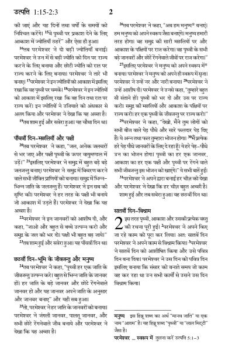

बाइबल क्या है?
एक बड़ी किताब?
बाइबल के बारे में सबसे पहली चीज़ जो हमें पता चलती है, वह यह है कि यह एक भी किताब नहीं है, बल्कि 66 किताबों का संग्रह है! हालाँकि हम उन्हें किताबें कहते हैं, बाइबल में वास्तव में कहानियाँ, इतिहास, कविता और गीत, आत्मकथाएँ और कई पत्र शामिल हैं।(यह ई-मेल से पहले था, याद है?)
बाइबल के बारे में सबसे पहली चीज़ जो हमें पता चलती है, वह यह है कि यह एक भी किताब नहीं है, बल्कि 66 किताबों का संग्रह है! हालाँकि हम उन्हें किताबें कहते हैं, बाइबल में वास्तव में कहानियाँ, इतिहास, कविता और गीत, आत्मकथाएँ और कई पत्र शामिल हैं।(यह ई-मेल से पहले था, याद है?)
दाईं ओर का चित्र दिखाता है कि कैसे बाइबल की पुस्तकों को श्रेणियों (या शैलियों) में बांटा गया है।
यह समझने के लिए कि बाइबल इतनी अलग-अलग पुस्तकों से क्यों बनी है, यह बाइबल के इतिहास के बारे में और इसे कैसे लिखा गया, इसके बारे में थोड़ा जानने में मदद करता है। परमेश्वर ने लोगों को लगभग 3,000 साल पहले मानव जाति के लिए अपने संदेश लिखने के लिए प्रेरित करना शुरू किया (शुरुआती तिथियां थोड़ी अस्पष्ट हैं)। लगभग 1,600 वर्षों की अवधि में, इतिहास के विभिन्न कालों और दुनिया भर के विभिन्न स्थानों के कम से कम 40 अलग-अलग लेखकों ने वह दर्ज किया जो परमेश्वर ने उन्हें कहने के लिए प्रेरित किया था और फिर भी, लेखकों के इस विविध समूह के बावजूद, बाइबल मूल रूप से एक ही कहानी कहती है: वह कहानी जो लोगों को यीशु की ओर ले जाती है, जो दुनिया के लिए परमेश्वर का अंतिम संदेश था।
बाइबल एक बहुत बड़ी किताब की तरह लग सकती है। कुछ लोग सोचते हैं या उन्होंने सुना है कि बाइबल रहस्यमय है या समझने में कठिन है। उन्हें यह भी बताया गया होगा कि केवल मंत्री या पुजारी ही बाइबल को सही मायने में समझ सकते हैं।

बाइबल एक बहुत बड़ी किताब की तरह लग सकती है। कुछ लोग सोचते हैं या उन्होंने सुना है कि बाइबल रहस्यमय है या समझने में कठिन है। उन्हें यह भी बताया गया होगा कि केवल मंत्री या पुजारी ही बाइबल को सही मायने में समझ सकते हैं।
यही कारण है कि यह जानने में मदद करता है कि बाइबल वास्तव में क्या है: हर जगह सभी लोगों के लिए परमेश्वर का संदेश, जिसे सामान्य लोगों (हर कोई!) पढ़ने का इरादा रखता है।
वचन क्या है?
शब्द "वसीयतनामा" हमें एक वसीयत ("अंतिम वसीयत और वसीयतनामा") के बारे में सोचने पर मजबूर कर सकता है: एक कानूनी दस्तावेज जो किसी व्यक्ति की इच्छाओं की घोषणा करता है कि उनकी संपत्ति और संपत्ति का क्या होता है जब वे मर जाते हैं। बाइबल में, यीशु के पृथ्वी पर आने से बहुत पहले, परमेश्वर ने सबसे पहले अपनी इच्छा व्यक्त की थी कि लोग उसे अपने एकमात्र परमेश्वर के रूप में जाने और उसकी आराधना करें; बदले में, परमेश्वर मनुष्यों को उनके पापों के लिए क्षमा करेगा। बाइबल का पहला भाग, पुराना नियम, इस बात की कहानी है कि मानवजाति ने परमेश्वर की इच्छा के प्रति कैसे प्रतिक्रिया व्यक्त की।
क्योंकि मानवजाति ने परमेश्वर की इच्छा का पालन नहीं किया, परमेश्वर ने उन्हें क्षमा करने के लिए एक नया तरीका रखा: यीशु, उनके इकलौते पुत्र, को उनके पापों के लिए मरने के लिए पृथ्वी पर भेजना। यीशु की कहानियाँ और जिन्होंने उसका अनुसरण करना चुना, वे परमेश्वर के नए नियम की कहानियाँ हैं, या मानव जाति के लिए उसकी इच्छा है जिसे उसने बनाया है। और इसलिए, बाइबल पुराने नियम और नए नियम में विभाजित है: वे पुस्तकें जो यीशु के संसार में आने से पहले लिखी गई थीं और जो बाद में लिखी गई थीं।

मैं बाइबल में कोई अंश कैसे ढूँढ़ सकता हूँ?
बाइबल को पढ़ना आसान बनाने के लिए, बाइबल की किताबों के नामों से परिचित होना बहुत मददगार है। भले ही यह एक कठिन काम की तरह लग सकता है, लेकिन सभी नामों को क्रम से याद करना सबसे अधिक सहायक होता है। एक दिन में 10 नाम याद करने के लिए खुद को चुनौती दें। जब आप अगले 10 को याद करना शुरू करते हैं, तो सुनिश्चित करें कि आपने पहले याद किया है, ताकि आप उन सभी को क्रम से पढ़ सकें।
बाइबिल की पुस्तकों की एक सूची नीचे दी गई है। आप इसे याद करने के लिए अपने मार्गदर्शक के रूप में इसका उपयोग कर सकते हैं। कुछ नामों का उच्चारण करना कठिन लग सकता है; उदाहरण के लिए, अय्यूब की पुस्तक का उच्चारण ऐसे किया जाता है जैसे कि उसके अंत में "ई" ("जॉब") हो। यदि आपके मन में किसी पुस्तक के नाम का उच्चारण करने के बारे में कोई प्रश्न है, तो अपने बाइबल अध्ययन शिक्षक या चर्च के किसी मंत्री से पूछने में संकोच न करें, जिसमें आप जाते हैं।
बाइबल को किसी भी पृष्ठ पर खोलें और आप कई छोटे पैराग्राफ देखेंगे, जिनमें से प्रत्येक में एक संख्या होगी। ये श्लोक कहलाते हैं। छंदों के संग्रह को एक अध्याय कहा जाता है (और सभी अध्यायों में समान संख्या में छंद नहीं होते हैं)। इसका एकमात्र अपवाद पुराने नियम में ओबद्याह की पुस्तक और फिलेमोन की पुस्तकें, 2 और 3 यूहन्ना, और नए नियम में यहूदा हैं; वे अध्यायों में विभाजित नहीं हैं।

जब लोग बाइबल के विशिष्ट अंशों का उल्लेख करते हैं, तो वे "अध्याय और पद्य" कहलाते हैं। यदि कोई चाहता है कि आप यूहन्ना की पुस्तक के तीसरे अध्याय में सोलहवें पद को खोजें, तो आप शायद इसे इस प्रकार लिखा हुआ देखेंगे: यूहन्ना 3:16।
यहीं पर बाइबल की पुस्तकों के नाम याद रखना काम आता है: आप जान लेंगे कि यूहन्ना नए नियम की चौथी पुस्तक है। यूहन्ना की पुस्तक को खोजने के बाद, आप तीसरे अध्याय की तलाश करेंगे, और अंत में, सोलहवें पद की। बाइबिल में अंशों के सभी संदर्भ यूहन्ना 3:16 के साथ ऊपर लिखे गए हैं (कभी-कभी पुस्तक के संक्षिप्त नाम का उपयोग किया जाता है)। यदि एक से अधिक पद का उल्लेख किया जा रहा है, तो इसे इस प्रकार लिखा जाएगा: निर्गमन 20:1-17। इसका अर्थ है कि आप निर्गमन की पुस्तक के बीसवें अध्याय के पहले सत्रह पद पाएंगे। केक का टुकड़ा!
पुराना नियम
- 1 मूसा - उत्पत्ति
- 2 मूसा - यात्रा
- 3 मूसा - लैव्यव्यवस्था
- 4 मूसा - संख्याएँ
- 5 मूसा - दूसरी धरणी
- जोशुआ
- जज
- रूथ
- 1 सैमुअल
- 2 सैमुअल
- 1 राजा
- 2 राजा
- 1 प्रदीप्तिसंहिता
- 2 रदीप्तिसंहिता
- एज्रा
- नहेमायाह
- एस्तेर
- नौकरी (नौकरी)
- भजन
- नीति
- काहेलेथ (नीतिवचन)
- उच्चगति
- यशायाह
- यिर्मयाह
- विलाप
- ईजेकील
- डैनियल
- होसे
- जोएल
- अमोस
- ओबद्याह
- जोना
- मीठा
- नहुम
- हबक्कूक
- सफन्याह
- हाग्गै
- जकर्याह
- मलाकी
नया करार
- मैथ्यू - मार्क
- मार्कस
- लुका
- जॉन
- प्रेरितों का इतिहास
- रोमी
- 1 कुरिन्थियों
- 2 कुरिन्थियों
- गैलाटियंस
- इफिसियों
- फिलिपी
- कुलुस्सियन
- 1 थिस्सलुनिकियों
- 2 थिस्सलुनिकियों
- 1 टिमोथी
- 2 टिमोथी
- टाइटस
- फिलेमोन
- हिब्रू
- जैकब
- 1 पीटर
- 2 पीटर
- 1 जॉन
- 2 जॉन
- 3 जॉन
- यहूदा
- प्रकटीकरण